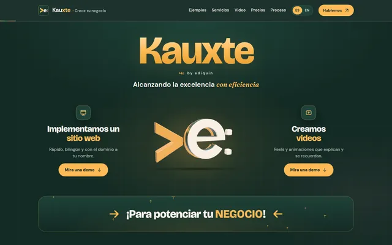
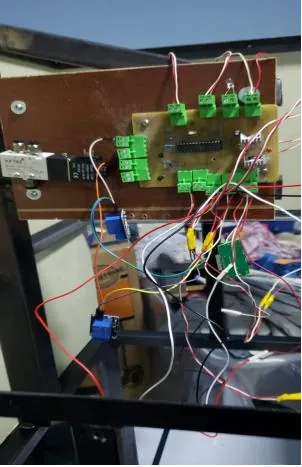
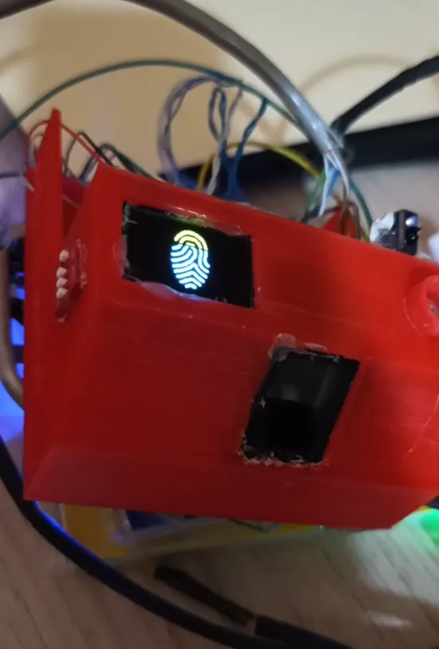

For churches, brands and social media
Design and video
- Graphic design and branding
- Video editing and motion graphics
- 3D animation (Blender, Three.js)
- Generative AI: image, voice and video
Electronics engineer · Full-stack developer · AI automation · Design and video
I built websites for clients such as Cox Automotive at CodeRoad and taught at university. Today I bring engineering and design together: posters, brand identities, videos, websites and AI agent workflows, making sure every piece looks good and works.



My work
Design and engineering support each other, but each one has its own page with real projects. Go in through the one you care about.
For churches, brands and social media
For teams and technical projects
Something on both paths? AI_design_7thday is software that designs: AI skills that make Youth Ministries posters with the correct emblems. See the project
Experience
I started out designing circuit boards and electronic systems, then built websites for international clients and taught at university. That is where my way of working comes from: measure, test and make sure every part fits.
Universidad Mayor de San Andrés, La Paz, specialising in Computer Systems.
During my internship I designed and assembled about ten circuits, from schematic to board: an interactive board for teaching electronics and the controller for a food pressing machine. My degree project was a biometric attendance system with IoT and a reporting website for the Institute of Applied Electronics.



An open-source web app for pet adoption: database, PHP and MySQL backend and cloud deployment. See the code
Automotive websites and digital experiences for clients such as Cox Automotive: implementation, QA and migration validation, working directly with English-speaking clients. Named TechStar of the Month · Customer Success Legend in September 2025.
Computer Architecture, Digital Systems I and II and Database Systems I at Universidad Adventista de Bolivia, with competency-based materials and AI in class. In 2024 I completed a Diploma in Competency-Based Higher Education.
Cloud deployment and agentic AI training at CodeRoad, agentic AI hackathons, and courses from Anthropic (Model Context Protocol, Claude Code in Action) and on LangGraph.
Tools for Adventist Youth Ministries: a system to score events and camps, agent workflows that design posters and an app for Pathfinder units. Plus my studio, Kauxte, and the Nativzar channel.
Invested as a Master Guide in December 2025, Pathfinder Club director from 2020 to 2024 and Adventist Youth Ministries director in 2017.
To design interfaces as a system before coding them.
Contact
Posters, a video, a website, an app or an AI agent workflow. Tell me what you need and I'll reply with a clear proposal. I work in Spanish and English.